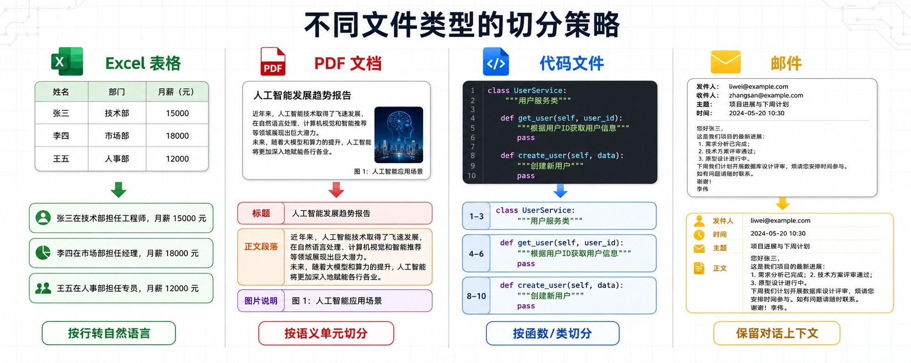
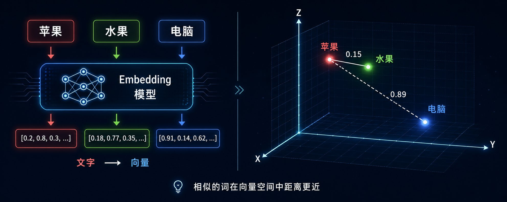
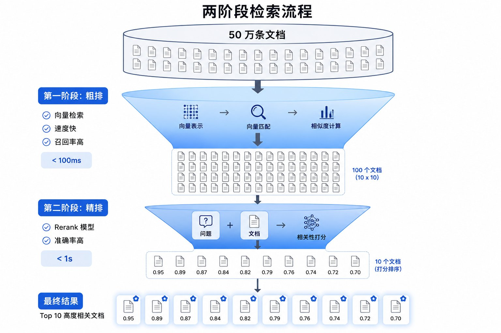
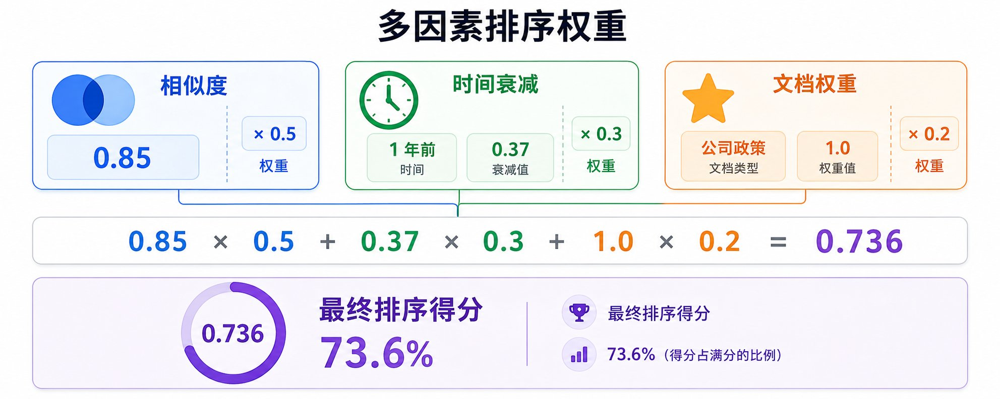
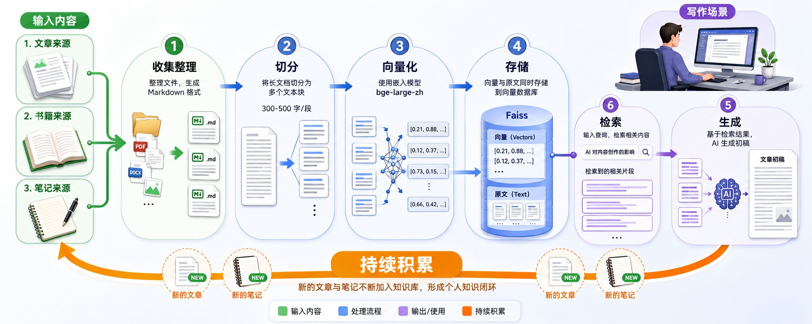

>
第一章：RAG 和 Embedding 是什么
RAG = Retrieval-Augmented Generation = 检索增强生成。
传统方式下，你问 AI 问题，AI 只能根据训练时的知识回答。如果是新的信息，AI 不知道。RAG 的方式是，你问 AI 问题，AI 先去知识库里找相关文档，然后根据文档回答。核心区别在于，传统方式 AI 的知识是固定的，RAG 方式 AI 可以实时查询最新的文档。
完整流程分为五步：用户问问题 → 系统去知识库里找相关文档 → 把文档给 AI → AI 根据文档生成答案。
Embedding 就是把文字变成数字。计算机不认字，只认数字。你要让 AI 知道「苹果」和「水果」很像，就得把它们都变成数字，然后算距离。用 Embedding 模型，把文字变成一串数字（向量），比如「苹果」可能变成 [0.2, 0.8, 0.3, ...]，这串数字有 1024 个或 1536 个。这样可以算相似度，「苹果」的向量和「水果」的向量很接近，「苹果」的向量和「电脑」的向量就很远。
整个 RAG 系统的工作原理是：把所有文档切成小段，用 Embedding 模型把每段文字变成向量，把向量存到向量数据库里。用户问问题时，把问题也变成向量，然后在数据库里找最相似的文档，把找到的文档和问题一起给 AI，AI 生成答案。
第二章：企业级 RAG 需要什么 - 数据层面
基础 RAG 对个人用户够了，但对企业用户不够。企业要求准确率高、稳定性好。数据层面要解决三个核心问题：文档怎么切分、怎么向量化、怎么选数据库。
2.1 文档切分：不同文件类型的处理策略
简单的滑动窗口切分在企业场景下完全不够用。企业的文档类型复杂，Excel、PDF、Word、PPT、代码文件、邮件、聊天记录，每种文件的结构完全不同，需要针对性处理。
Excel 表格的处理：
Excel 不能按行切分，因为单独一行没有意义。正确的做法是识别表格的语义结构，把每一行转换成完整的自然语言描述。比如员工信息表，「张三 | 技术部 | 工程师 | 15000」要转换成「张三在技术部担任工程师，月薪 15000 元」。如果表格有多个 sheet，每个 sheet 要单独处理，并且保留 sheet 名称作为上下文。
更复杂的情况是，Excel 里可能有合并单元格、多级表头、嵌套表格。这时候需要先解析表格结构，识别出主表头、子表头、数据行，然后按照层级关系拼接成自然语言。比如财务报表，「2023 年 Q1 | 收入 | 产品 A | 100 万」要转换成「2023 年第一季度产品 A 的收入为 100 万元」。
PDF 文档的处理：
PDF 分三种：纯文本 PDF、扫描版 PDF、混合 PDF。纯文本 PDF 可以直接提取文字，但要注意保留段落结构，不能把所有文字连成一串。扫描版 PDF 需要 OCR 识别，识别完了要做后处理纠错，因为 OCR 的准确率不是 100%。混合 PDF 既有文字又有图片，文字部分直接提取，图片部分要么 OCR，要么用多模态模型生成描述。
PDF 的切分不能简单按页切，因为一页可能包含多个主题。正确的做法是先识别文档结构（标题、段落、列表、表格），然后按照语义单元切分。比如技术文档，一个配置项的说明可能跨越两页，你不能把它切成两段，要保持完整性。
Word 和 PPT 的处理：
Word 和 PPT 有格式信息（标题、加粗、列表），这些格式代表了内容的重要性。去掉格式，AI 就不知道哪些是重点。正确的做法是保留格式信息，用 Markdown 语法表示。比如「重要提示：本产品不适用于孕妇」，保留加粗标记，AI 才知道这是重点。
PPT 的切分要按照幻灯片的逻辑结构来，一张幻灯片通常是一个完整的观点，不要把它切碎。如果一张幻灯片内容太多，可以按照标题和正文分开处理，但要保留幻灯片编号作为上下文。
代码文件的处理：
代码文件不能按行切分，因为代码的语义单元是函数、类、模块。正确的做法是用 AST（抽象语法树）解析代码结构，按照函数、类、模块切分。每个函数要保留函数签名、注释、函数体，这样 AI 才能理解这个函数是干什么的。
如果代码文件很大，一个类有几百行，可以按照方法切分，但要保留类名和类注释作为上下文。
邮件和聊天记录的处理：
邮件和聊天记录有时间线和对话结构。邮件要保留发件人、收件人、主题、时间、正文。聊天记录要保留对话的上下文，不能把每条消息单独切分，要按照对话轮次切分。
切分的多种策略：
- 按段落切分： 最常见的方式，一个自然段作为一个 chunk。适合结构清晰的文档。
- 按标题层级切分： 识别文档的标题结构，按照标题层级切分。一个二级标题下的所有内容作为一个 chunk。
- 按语义单元切分： 用 NLP 模型识别文档的语义边界，在语义发生转换的地方切分。
- 按完整观点切分： 识别文档中的完整观点或论述单元，一个完整的观点作为一个 chunk。
- 按固定窗口切分（滑动窗口）： 设定固定窗口大小（如 500 字），每次滑动步长（如 400 字）。作为兜底方案。
通用的切分原则： 不管用哪种切分策略，核心原则是保持语义完整性。切分的粒度要根据文档类型动态调整。实际操作中，往往需要组合多种切分策略。
2.2 向量化：模型选择和输入处理
向量化的核心是选对模型和控制输入长度。Embedding 模型是在特定语言的数据上训练的，用英文模型处理中文效果会很差。
- 中文场景：bge-large-zh 效果最好，维度 1024
- 英文场景：OpenAI text-embedding-3-large 效果最好，维度 1536
- 多语言混合：multilingual-e5-large
要控制输入长度。bge-large-zh 最大输入 512 Token（约 400 字），推荐 300-400 字。输入越长，信息密度越低。
图片和图表的向量化：
- OCR + 文本 Embedding
- 多模态视觉 Embedding 模型（如 CLIP）
- 图片描述 + 文本 Embedding（用多模态 LLM 生成描述）
三种方法可以结合使用。
2.3 向量数据库选型
- 数据量 10 万条以内：Faiss（免费，本地，不支持实时更新）
- 10 万-100 万条：Milvus 或 Qdrant（开源，支持实时更新）
- 超过 100 万条：Pinecone 或 Weaviate（商业/自建）
索引类型：IVF_FLAT（中小规模）、IVF_SQ8（大规模、速度优先）、HNSW（超大规模、最快）
第三章：企业级 RAG 需要什么 - 检索策略
数据搞定了，只是成功了 80%。剩下 20% 在检索策略上。
3.1 长问题的处理：压缩和改写
用户输入 1000 字的需求文档，Embedding 模型只能处理 500 字。两种方法：
- 压缩： 用 LLM 总结成 500 字
- 改写： 拆成多个子问题单独检索
3.2 召回率优化：粗排和精排
两阶段检索：
- 粗排： 向量检索快速召回 Top-100（速度 ~100ms）
- 精排： Rerank 模型重新打分，返回 Top-10
3.3 准确率优化：Rerank 模型
Rerank 模型把问题和文档一起输入，直接判断相关性，输出 0-1 分数。中文场景用 bge-reranker-large，英文用 Cohere rerank（商业）。
3.4 综合排序：多因素加权
最终得分 = 相似度 × 0.5 + 时间衰减 × 0.3 + 权重 × 0.2
3.5 混合检索：向量检索 + 关键词检索
向量检索负责语义相似，关键词检索负责精确匹配（编号、专有名词）。可配合 Elasticsearch。
3.6 查询扩展：同义词和相关词
用同义词词典或 LLM 生成多个表达方式，分别检索后合并结果。
3.7 负反馈学习
收集用户点击行为、停留时间作为负反馈信号，优化检索排序。
第四章：个人用户怎么做 - 内容创作场景
4.1 怎么构建个人知识库
- 收集内容：文章、书籍、笔记、收藏网页 → Markdown 格式
- 切分和向量化：按段落切分，每段 300-500 字，用 bge-large-zh
- 存储：Faiss 本地部署
- 检索：输入主题，系统检索出相关段落
4.2 怎么设计 Prompt 去检索
场景 1：找相关素材
场景 2：生成初稿
场景 3：找具体信息
4.3 为什么这样做很有价值
- 节省时间
- 减少 Token 消耗（从 20 万降到 5000）
- 保持内容一致性
- 持续积累
4.4 实际操作建议
个人知识库不需要很复杂。用 Faiss 本地部署、按段落切分、向量检索就够了。Prompt 设计是关键。定期更新知识库。
总结
企业级 RAG 和基础 RAG 的核心区别在于数据处理和检索策略。数据层面，不同文件类型要用不同的切分策略，向量化要选对语言的模型，数据库要根据需求选择。检索层面，长问题要压缩或改写，召回率用粗排+精排，准确率用 Rerank，排序要综合多因素。
这个工作流适合谁
- ✅ 想接企业 AI 项目赚钱的技术人
- ✅ 需要搭建企业知识库的开发者
- ✅ 想优化 RAG 系统准确率的从业者
- ✅ 想建立个人知识库的创作者
核心心法： 企业买单的不是 AI 技术本身，而是解决具体问题的能力。数据切分和检索策略是 RAG 工程的核心竞争力。
>
📸 RAG系统架构图






>
第一章：RAG と Embedding とは何か
RAG = Retrieval-Augmented Generation = 検索拡張生成です。
従来の方法では、AI に質問をすると、AI は学習時の知識に基づいてのみ回答していました。新しい情報については、AI は知りません。RAG 方式では、質問を受けた AI がまず知識ベースから関連ドキュメントを検索し、そのドキュメントに基づいて回答します。中核的な違いは、従来方式では AI の知識が固定されているのに対し、RAG 方式では AI が最新のドキュメントをリアルタイムに参照できる点です。
完全な流れは 5 つのステップに分かれます：ユーザーが質問する → システムが知識ベースから関連ドキュメントを検索する → ドキュメントを AI に渡す → AI がドキュメントに基づいて回答を生成する。
Embedding とは、テキストを数字に変換することです。コンピュータは文字を認識できず、数字しか扱えません。「リンゴ」と「果物」が似ていることを AI に理解させるには、両方を数字に変換し、その距離を計算する必要があります。Embedding モデルを使用してテキストを一連の数字（ベクトル）に変換します。例えば「リンゴ」は [0.2, 0.8, 0.3, ...] のようなベクトルになります。このベクトルは 1024 個または 1536 個の要素を持ちます。これにより類似度を計算でき、「リンゴ」のベクトルと「果物」のベクトルは近く、「リンゴ」のベクトルと「コンピュータ」のベクトルは遠くなります。
RAG システム全体の動作原理は次のとおりです：すべてのドキュメントを小さなチャンクに分割し、Embedding モデルで各チャンクをベクトルに変換し、ベクトルをベクトルデータベースに保存します。ユーザーが質問すると、その質問もベクトルに変換し、データベース内で最も類似したドキュメントを検索し、見つかったドキュメントを質問とともに AI に渡し、AI が回答を生成します。
第二章：企業向け RAG に必要なもの - データ面
基本的な RAG は個人ユーザーには十分ですが、企業ユーザーには不十分です。企業は高い精度と安定性を要求します。データ面では、ドキュメントの分割方法、ベクトル化の方法、データベースの選定という 3 つの中核的課題を解決する必要があります。
2.1 ドキュメント分割：ファイルタイプ別の処理戦略
単純なスライディングウィンドウ分割では、企業のシナリオでは全く不十分です。企業のドキュメントは種類が複雑で、Excel、PDF、Word、PPT、コードファイル、メール、チャットログと、ファイルの構造がそれぞれまったく異なり、対象に応じた処理が必要です。
Excel テーブルの処理：
Excel は行ごとに分割できません。1 行だけでは意味を成さないからです。正しい方法は、テーブルのセマンティック構造を識別し、各行を完全な自然言語の記述に変換することです。例えば、従業員情報テーブルで「張三 | 技術部 | エンジニア | 15000」は「張三は技術部に所属し、エンジニアを務めており、月給は 15000 元です」のように変換します。テーブルに複数のシートがある場合は、各シートを個別に処理し、シート名をコンテキストとして保持します。
さらに複雑なケースとして、Excel にはセル結合、多段階ヘッダー、ネストされたテーブルが含まれることがあります。その場合はまずテーブル構造を解析し、メインヘッダー、サブヘッダー、データ行を識別し、階層関係に従って自然言語に結合します。例えば財務テーブルで「2023 年 Q1 | 収入 | 製品 A | 100 万」は「2023 年第 1 四半期の製品 A の収入は 100 万元です」のように変換します。
PDF ドキュメントの処理：
PDF は 3 種類に分けられます：プレーンテキスト PDF、スキャン版 PDF、混合 PDF です。プレーンテキスト PDF はそのままテキストを抽出できますが、段落構造を保持し、すべてのテキストを一続きにしないように注意する必要があります。スキャン版 PDF は OCR 認識が必要で、認識後は後処理による誤り訂正を行います。OCR の精度は 100% ではないためです。混合 PDF はテキストと画像の両方を含み、テキスト部分は直接抽出し、画像部分は OCR またはマルチモーダルモデルで説明を生成します。
PDF の分割は単純にページごとに行うべきではありません。1 ページに複数のトピックが含まれる可能性があるからです。正しい方法は、まずドキュメント構造（タイトル、段落、リスト、テーブル）を識別し、セマンティック単位で分割することです。例えば技術ドキュメントでは、ある設定項目の説明が 2 ページにまたがることがあります。それを 2 つに分割せず、完全性を保つ必要があります。
Word と PPT の処理：
Word や PPT には書式情報（タイトル、太字、リスト）があり、これらの書式は内容の重要度を表しています。書式を取り除くと、AI はどこが重要なのかを判断できなくなります。正しい方法は、書式情報を保持し、Markdown 記法で表現することです。例えば「重要なお知らせ：本製品は妊婦には適していません」という文では、太字マークを保持することで、AI が重要なポイントだと認識できます。
PPT の分割はスライドの論理構造に従う必要があります。1 枚のスライドは通常、1 つの完結した主張であり、それを細分化してはいけません。スライドの内容が多すぎる場合は、タイトルと本文に分けて処理しますが、スライド番号をコンテキストとして保持します。
コードファイルの処理：
コードファイルは行ごとに分割できません。コードのセマンティック単位は関数、クラス、モジュールだからです。正しい方法は、AST（抽象構文木）を使用してコード構造を解析し、関数、クラス、モジュールごとに分割することです。各関数は、関数シグネチャ、コメント、関数本体を保持し、AI がその関数の役割を理解できるようにします。
コードファイルが大きく、1 つのクラスが数百行に及ぶ場合は、メソッドごとに分割できますが、クラス名とクラスコメントをコンテキストとして保持します。
メールとチャットログの処理：
メールやチャットログにはタイムラインと対話構造があります。メールでは、送信者、受信者、件名、日時、本文を保持します。チャットログでは会話のコンテキストを保持し、各メッセージを個別に分割するのではなく、会話のターンごとに分割します。
分割の多様な戦略：
- 段落ごとの分割： 最も一般的な方法で、1 つの自然段落を 1 つのチャンクとします。構造が明確なドキュメントに適しています。
- 見出し階層ごとの分割： ドキュメントの見出し構造を識別し、見出し階層に従って分割します。1 つのレベル 2 見出しの下にあるすべての内容を 1 つのチャンクとします。
- セマンティック単位ごとの分割： NLP モデルを使用してドキュメントのセマンティック境界を識別し、意味が切り替わる箇所で分割します。
- 完結した主張ごとの分割： ドキュメント内の完結した主張や論述単位を識別し、1 つの完結した主張を 1 つのチャンクとします。
- 固定ウィンドウ分割（スライディングウィンドウ）： 固定ウィンドウサイズ（例：500 字）を設定し、スライドステップ（例：400 字）ごとに移動します。フォールバック方案として使用します。
共通の分割原則： どの分割戦略を用いる場合でも、中核となる原則はセマンティックの完全性を保つことです。分割の粒度はドキュメントの種類に応じて動的に調整します。実際の運用では、複数の分割戦略を組み合わせて使用することがよくあります。
2.2 ベクトル化：モデル選択と入力処理
ベクトル化の中核は、適切なモデルを選び、入力長を制御することです。Embedding モデルは特定の言語のデータで学習されており、英語のモデルで中国語を処理すると精度が著しく低下します。
- 中国語シナリオ：bge-large-zh が最も効果的で、次元は 1024
- 英語シナリオ：OpenAI text-embedding-3-large が最も効果的で、次元は 1536
- 多言語混合：multilingual-e5-large
入力長を制御する必要があります。bge-large-zh の最大入力は 512 Token（約 400 字）で、推奨は 300～400 字です。入力が長くなるほど、情報密度は低下します。
画像や図表のベクトル化：
- OCR + テキスト Embedding
- マルチモーダル視覚 Embedding モデル（CLIP など）
- 画像説明 + テキスト Embedding（マルチモーダル LLM で説明を生成）
3 つの方法は組み合わせて使用できます。
2.3 ベクトルデータベースの選定
- データ量 10 万件以内：Faiss（無料、ローカル、リアルタイム更新非対応）
- 10 万～100 万件：Milvus または Qdrant（オープンソース、リアルタイム更新対応）
- 100 万件超：Pinecone または Weaviate（商用／セルフホスト）
インデックスタイプ：IVF_FLAT（中小規模）、IVF_SQ8（大規模、速度優先）、HNSW（超大規模、最速）
第三章：企業向け RAG に必要なもの - 検索戦略
データの処理ができれば、成功の 80% は達成です。残りの 20% は検索戦略にあります。
3.1 長い質問の処理：圧縮とリライト
ユーザーが 1000 字の要件ドキュメントを入力しても、Embedding モデルは 500 字しか処理できません。2 つの方法があります：
- 圧縮： LLM で 500 字に要約する
- リライト： 複数のサブ質問に分割し、それぞれ個別に検索する
3.2 再現率の最適化：粗検索と精密検索
2 段階検索：
- 粗検索： ベクトル検索で高速に Top-100 を再現（速度 ~100ms）
- 精密検索： Rerank モデルで再スコアリングし、Top-10 を返す
3.3 精度の最適化：Rerank モデル
Rerank モデルは質問とドキュメントを一緒に入力し、直接関連性を判断して 0～1 のスコアを出力します。中国語シナリオでは bge-reranker-large、英語では Cohere rerank（商用）を使用します。
3.4 総合ソート：複数要素の重み付け
最終スコア = 類似度 × 0.5 + 時間減衰 × 0.3 + 重み × 0.2
3.5 ハイブリッド検索：ベクトル検索 + キーワード検索
ベクトル検索はセマンティック類似度を担当し、キーワード検索は正確な一致（番号、固有名詞など）を担当します。Elasticsearch と組み合わせることも可能です。
3.6 クエリ拡張：同義語と関連語
同義語辞書や LLM を使用して複数の表現を生成し、それぞれ検索した結果を統合します。
3.7 ネガティブフィードバック学習
ユーザーのクリック行動や滞在時間をネガティブフィードバック信号として収集し、検索のランキングを最適化します。
第四章：個人ユーザーはどう実践するか - コンテンツ作成シナリオ
4.1 個人知識ベースの構築方法
- コンテンツの収集：記事、書籍、ノート、ブックマークした Web ページ → Markdown 形式に変換
- 分割とベクトル化：段落ごとに分割、各段落 300～500 字、bge-large-zh を使用
- 保存：Faiss をローカルデプロイ
- 検索：テーマを入力すると、システムが関連する段落を検索
4.2 検索用 Prompt の設計方法
シナリオ 1：関連素材の検索
シナリオ 2：初稿の生成
シナリオ 3：特定情報の検索
4.3 この方法の価値
- 時間の節約
- Token 消費の削減（20 万から 5000 に低減）
- コンテンツの一貫性維持
- 継続的な蓄積
4.4 実践的なアドバイス
個人知識ベースは複雑である必要はありません。Faiss のローカルデプロイ、段落ごとの分割、ベクトル検索で十分です。Prompt の設計が鍵となります。定期的に知識ベースを更新しましょう。
まとめ
企業向け RAG と基本的な RAG の中核的な違いは、データ処理と検索戦略にあります。データ面では、ファイルタイプごとに異なる分割戦略を用い、ベクトル化には言語に適したモデルを選び、データベースはニーズに応じて選択します。検索面では、長い質問は圧縮またはリライトし、再現率は粗検索＋精密検索で、精度は Rerank で、ソートは複数要素を総合的に考慮します。
このワークフローが適している人
- ✅ 企業の AI プロジェクトで収入を得たい技術者
- ✅ 企業向け知識ベースを構築する必要がある開発者
- ✅ RAG システムの精度を最適化したい実務者
- ✅ 個人知識ベースを作りたいクリエイター
中核となる心構え： 企業が対価を払うのは AI 技術そのものではなく、具体的な問題を解決する能力です。データ分割と検索戦略が RAG エンジニアリングの中核的な競争力です。
>
📸 RAGシステム構成図